Abstract : The goals of this lecture is to manipulate the fast marching algorithm in 2D and 3D. Application to shortest path extraction (e.g. road tracking and tubular structure extraction in medical images) and Voronoi cell segmentation is presented.
path(path, 'toolbox_fast_marching/');
path(path, 'toolbox_fast_marching/data/');
path(path, 'toolbox_fast_marching/toolbox/');
cd toolbox_fast_marching
compile_mex;
cd ..
n = 128;
name = 'cavern'; % other possibilities are 'mountain' and 'road2'
W = load_image(name, n);
W = rescale(W, 0.01, 1); % set up a reasonable range for the potential
% display the weighting function
clf; imagesc(W); colormap gray(256);
[start_points,end_points] = pick_start_end_point(W);
options.end_points = end_points;
[D,S] = perform_fast_marching_2d(W, start_points, options);
% display the distance function
clf; imagesc(D);
D(I==Inf) = 0; % remove Inf values that make contour crash
figure; contour(D,50);
p = extract_path_2d(D,end_points, options);
% display the path
clf; plot_fast_marching_2d(W,S,p,start_points,end_points);
| 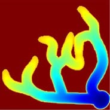 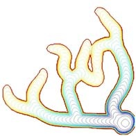
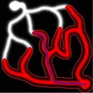 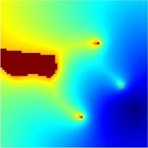 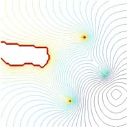 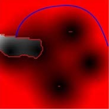 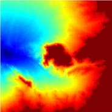 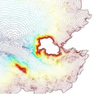 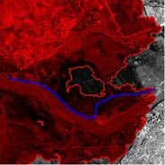 |
| Left : distance function for 3 different W maps. Center : the corresponding level set maps. Right : shortest path together with the explored area (in red). |
% load the whole volume
load brain1-crop-256.mat
% crop to retain only the central part
n = 100;
M = rescale( crop(M,n) );
% display some horizontal slices
imageplot(M(:,:,50));
% same thing in the other directions
...
| 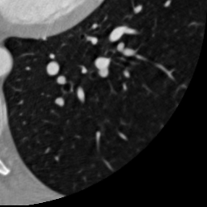 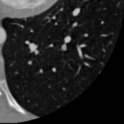
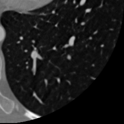 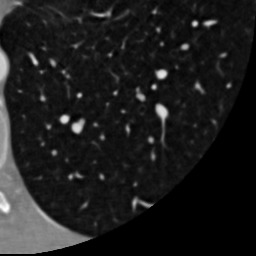
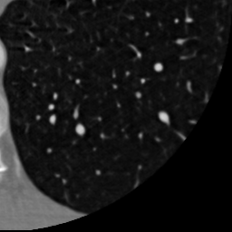 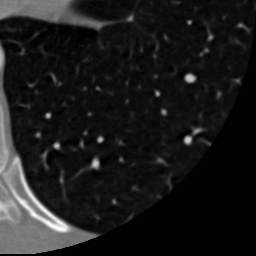 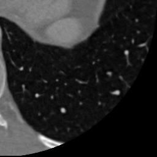 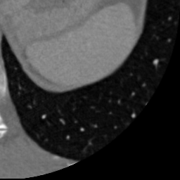 |
| Cross sections of the data-set. |
clf;
h = vol3d('cdata',M,'texture','2D');
view(3); axis off;
% set up a colormap
colormap bone(256);
% set up an alpha map
options.center = ...; % here a value in [0,1]
options.sigma = .08; % control the width of the non-transparent region
a = compute_alpha_map('gaussian', options); % you can plot(a) to see the alphamap
colormap bone(256);
% refresh the rendering
vol3d(h);
% try with other alphamapping and colormapping
...
| 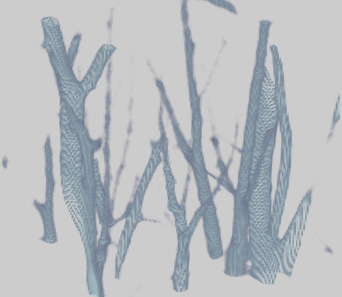 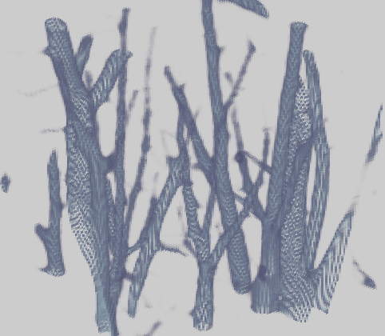
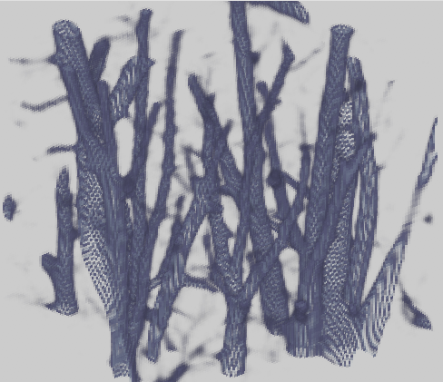 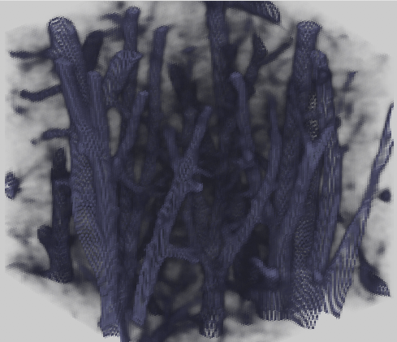 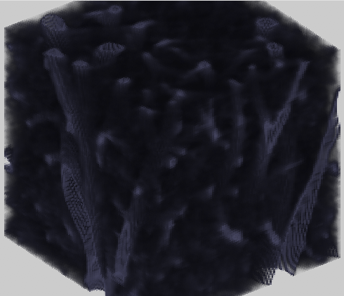 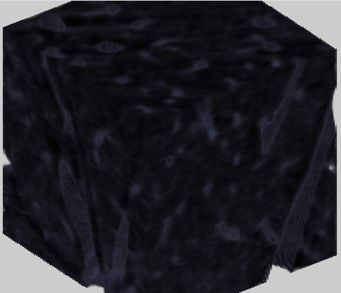 |
| Volumetric rendering with different alpha-mapping. Each time the options.center value is increased. |
% ask to the user for some input point
delta = 5;
clf; imageplot(M(:,:,delta));
title('Pick starting point');
start_point = round( ginput(1) );
start_point = [start_point(2); start_point(1); delta];
% compute a potential that is high only very close
% to the value of M at the selected point
W = ...;
W = rescale(W,.001,1);
% perform the front propagation
options.nb_iter_max = Inf;
[D,S] = perform_fast_marching_3d(W, start_point, options);
% display the results using vol3d
...
| 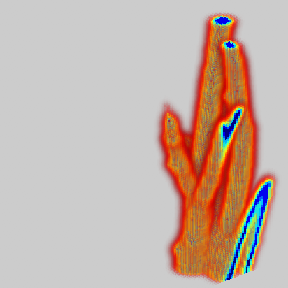 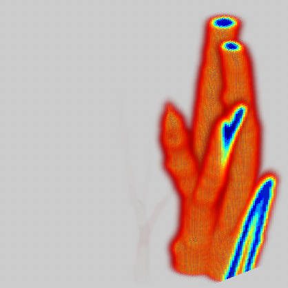 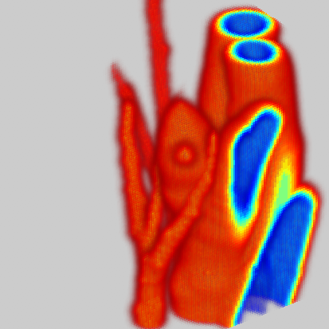 |
| Exploration of the distance function using vol3d. |
% extract a slice
d = D(:,:,n-delta);
% select the point (x,y) of minimum value of d
% hint: use functions 'min' and 'ind2sub'
...
[x,y] = ...;
end_point = [x;y;n-delta];
...
% extract the geodesic by discrete descent
path = compute_discrete_geodesic(D,end_point);
% draw the path
Dend = D(end_point(1),end_point(2),end_point(3));
D1 = double( D<=Dend );
clf;
plot_fast_marching_3d(M,D1,path,start_point,end_point);
| 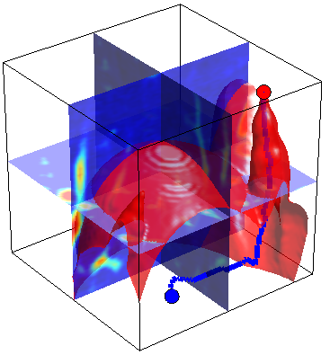 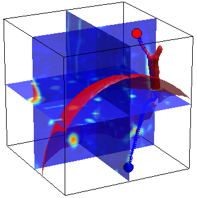 |
| Exploration of the distance function using vol3d. The red surface indicates the region of the volume that has been explored before hitting the ending point. |
n=300;
name = 'constant'; % other possibility is 'mountain'
W = load_potential_map(name, n);
m = 20; % number of center points
% compute the starting point at random.
start_points = floor( rand(2,m)*(n-1) ) +1;
[D,Z,Q] = perform_fast_marching_2d(W, start_points);
% display the sampling with the distance function
clf; hold on;
imagesc(D'); axis image; axis off;
plot(start_points(1,:), start_points(2,:), '.');
hold off;
colormap gray(256);
% display the segmentation
figure; clf; hold on;
imagesc(Q'); axis image; axis off;
plot(start_points(1,:), start_points(2,:), '.');
hold off;
colormap gray(256);
| 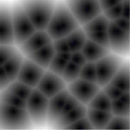 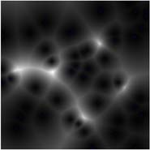 |
| Example of Voronoi cells (distance functions) obtained
with a constant speed W (left) and the mountain map (right). Note how the cell on the left have polygonal boundaries whereas cells on the right have curvy boundaries. |
faces = compute_voronoi_triangulation(Q);
hold on;
imagesc(Q'); axis image; axis off;
plot(start_points(1,:), start_points(2,:), 'b.', 'MarkerSize', 20);
plot_edges(compute_edges(faces), start_points, 'k');
hold off;
axis tight; axis image; axis off;
colormap jet(256);
| 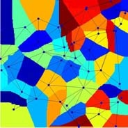 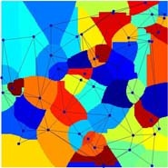 |
| Examples of triangulations. Notice how the canonical
euclidean Delaunay triangulation (left) differs from the geodesic one (right) when the metric is not constant. |
n=300;
name = 'mountain';
W = load_potential_map(name, n);
% perform sampling
landmark = [];
landmark = farthest_point_sampling( W, landmark, nbr_landmarks-size(landmark,2) );
% display
hold on;
imagesc(M');
plot(landmark(1,:), landmark(2,:), 'b.', 'MarkerSize', 20);
hold off;
axis tight; axis image; axis off;
colormap gray(256);
% try with other metric W, like 'constant'
...
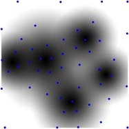 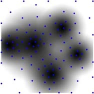 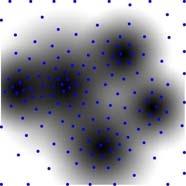
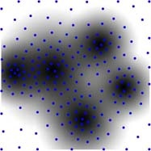 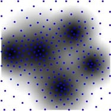 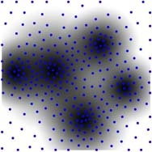Farthest point sampling with 50, 100, 150, 200, 250 and
300 points respectively.
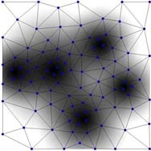 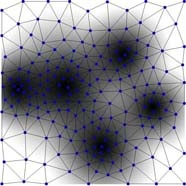 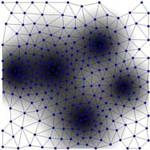 Farthest point triangulations.
[start_points,end_points] = pick_start_end_point(W);
% compute the heuristic
[H,S] = perform_fast_marching_2d(W, end_points);
% perform the propagation
options.end_points = end_points;
weight = 0.5; % should be between 0 and 1.
[D,S] = perform_fast_marching_2d(W, start_points, options, H*weight);
% compute the path
p = extract_path_2d(D,end_points, options);
% display
clf;
plot_fast_marching_2d(W,S,p,start_points,end_points);
colormap jet(256);
saveas(gcf, [rep name '-heuristic' num2str(weight) '.jpg'], 'jpg');
| 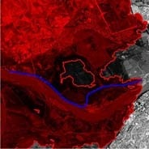 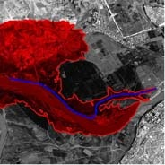 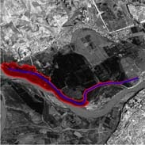 |
| Heuristic front propagation with a weight parameter of
0, 0.5 and 0.9 respectively. Notice how the explored area shrinks around the true path. |